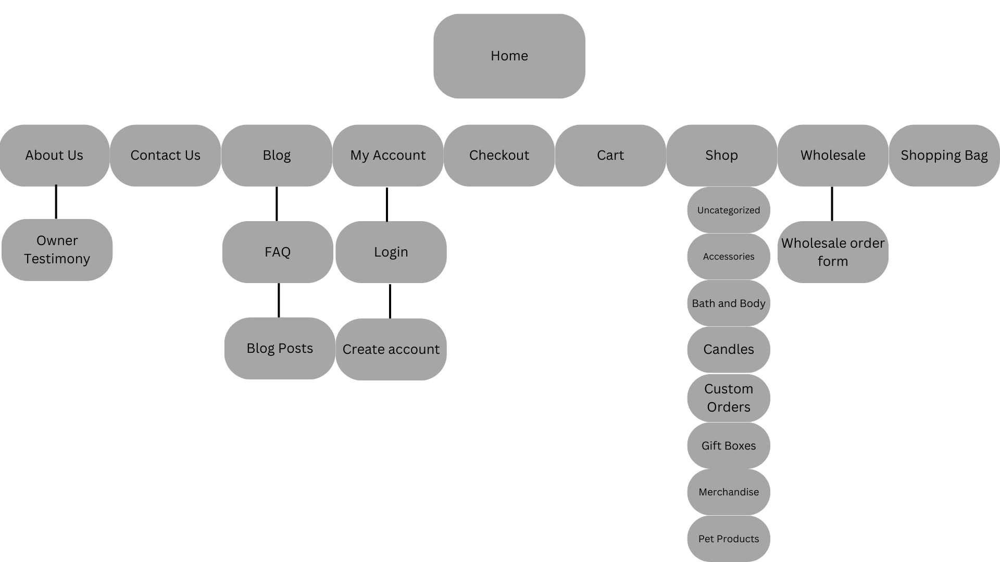
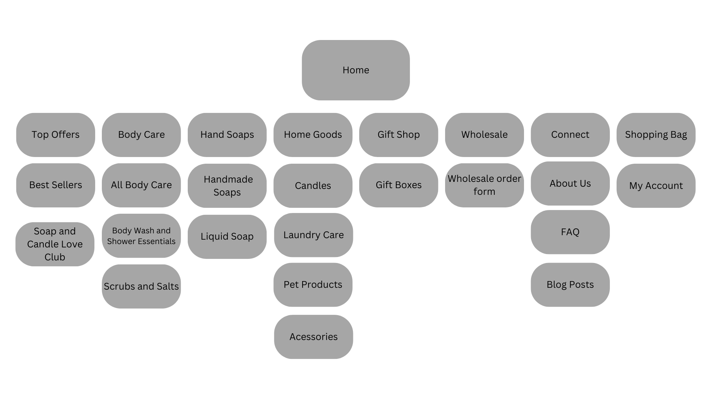

Copyright © 2024 Breanna Levy
Designed with Figma, Developed in Visual Studio Code
LET’S TALK ABOUT THE NEXT BIG THING!

Warm and Fuzzy Soapery
The primary goal of the Warm and Fuzzy Soapery initiative was to
foster interaction and elevate user satisfaction.
Serving as the concluding task for the Digital Imaging for Online
Applications course, the objective was to revamp the current website,
focusing on improving aesthetics, usability, and aligning it with
contemporary design standards.
Through this proposal, I have presented a comprehensive redesign that
highlights the products of Warm and Fuzzy Soapery, promotes user
interaction, and infuses personality into the website.
UX/UI Designer, Website Analysis and Critique, Visual Front-End Design,
Prototyping
October - November 2023
Role
The Warm and Fuzzy Soapery website needed a redesign due to various
issues. The existing layout was unappealing, with disorganized elements
causing an eye-sore. Photo compositions and fonts were inconsistent,
diminishing the site's professional appearance. Navigation errors
further hindered the user experience. The goal of the initiative was to
address these issues, create a visually pleasing website, and enhance
user satisfaction.
Outlining the Problem
Design Process
ANALYZE
Examine existing site.
IDEATE
PROTOTYPE
User flow & Sitemaps
Simulate user experiance
Analyze
I critiqued the Warm and Fuzzy Soapery website in a full video
analysis. My goal was to assess its user interface and overall design,
seeing how well it follows usability principles and pinpointing areas
for improvement. These are my key findings:
Now that I have defined the key areas of improvement within the website,
I can now ideate how to re-brand the site to eliminate redundancies,
enhance user experience, and elevate its overall functionality.
By examining and identifying issues and gaining a visual understanding
of the current Warm and Fuzzy Soapery website, I created a redesigned
sitemap that serves as a reference for the upcoming website overhaul. My
objective is to address navigation challenges, enhance user experience,
and optimize overall website functionality.
During the redesign process, I retained key elements from the previous
version of the website and incorporated enhanced design features. The
transformation is illustrated below, presenting a comparison of the
website's appearance before and after the redesign. This strategic
approach was adopted to ensure continuity for existing users while
providing a more refined and improved visual experience.
Before redesigning, I crafted a sitemap for the original website to
simplify navigation, improve user experience, optimize SEO, enhance
content efficiency, facilitate effective communication among
stakeholders, and plan for scalability.
To initiate this process, we need to examine the original structure of
the website by utilizing a sitemap.
- Unclear link pathways
- Confusing content
- Inefficient navigation design
- Excessive sub-page clutter
User Interface
1
- Poor visual layout
- Inconsistent colour palette
- Lack of brand identity
- Mixed text sizes and inconsistent fonts.
Overall Design
2
Ideate | Sitemap
Watch Full Analysis
Ideate | User Flow
Ideate | Design
Key Takeaways
Navigation and Information Architecture
-
The importance of intuitive navigation and a clear information
architecture to guide users through the website effortlessly.
-
Maintaining consistency in labels and terminology across the
website to avoid confusion and ensure a cohesive user experience.
-
Paying attention to whitespace and layout consistency to create a
visually balanced and harmonious design.
-
Consistent use of icons and imagery styles to reinforce the
overall visual theme and improve recognition.
-
Actively synthesizing and incorporating diverse ideas into the
redesign strategy, ensuring a well-rounded approach that considers
multiple viewpoints.
-
Implementing interactive elements that engage users and provide a
more dynamic and efficient way to consume information.
-
Tailoring the language to resonate with the target audience,
considering their preferences, understanding, and needs.
Design Principles for User-Centric Focus
-
Focusing on empathy in the design process to understand and
address the emotions and motivations of users.
-
Analyzing and optimizing user flows to minimize friction and
enhance the overall user journey.
Visual Consistency
Collaboration and Communication


 View Full Prototype
View Full Prototype